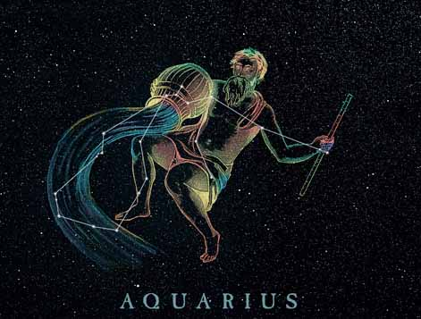
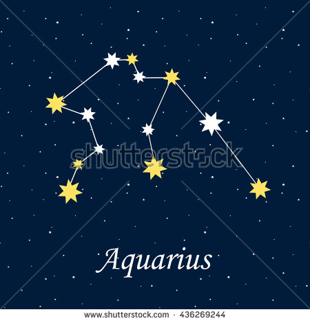
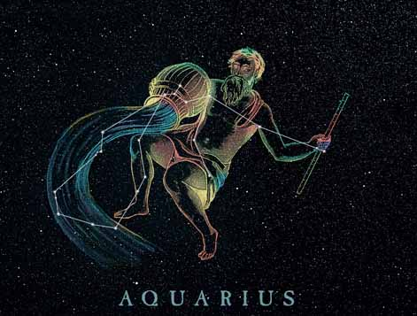
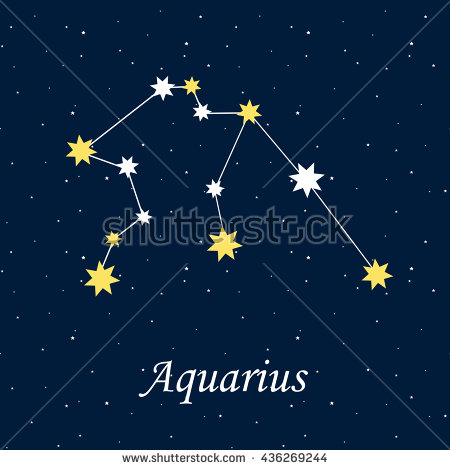

- This constellation is home to 4 meteor showers
- It is the zodiac constellation for February
- host the Trappest 1 EXO planet
- Aquarius is a air sighn not a water sighn
- Aquarius is laten means water bearer.
- intelligent
- Inventive
- Independent
Unpredictable - Detached
- friendly. With a good sense of humour
- Humanitarian
- Loyal
Traits of an Aquarius
 





what is the story of Aquarius
In Greek mytholgy Aquarius is Ganymede the young boy that was kidnapped by Zues. Zues sent his eagel Aquila,to snatch Ganymede from the field where the boy was whatching over his sheep. Ganymede would become the cup bearer or water carrier for the Olympian Gods . The constellation Crater is often thought to be Aquarius's vase or cup.